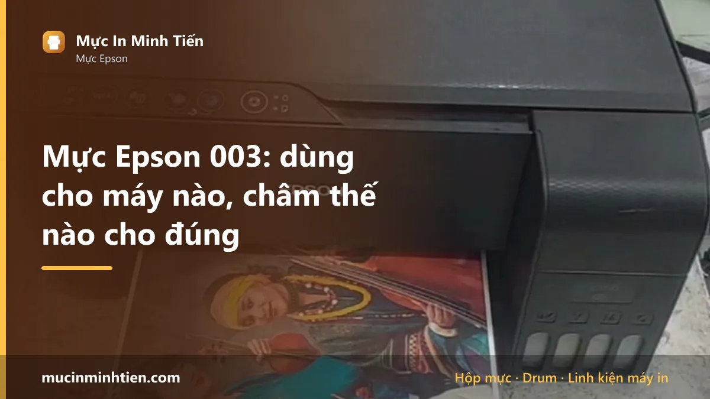
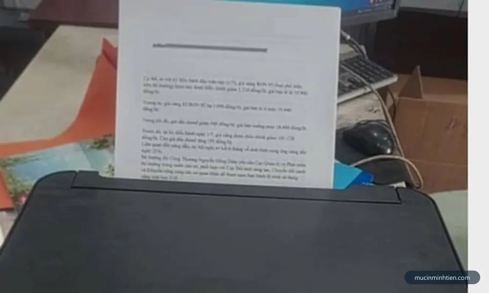
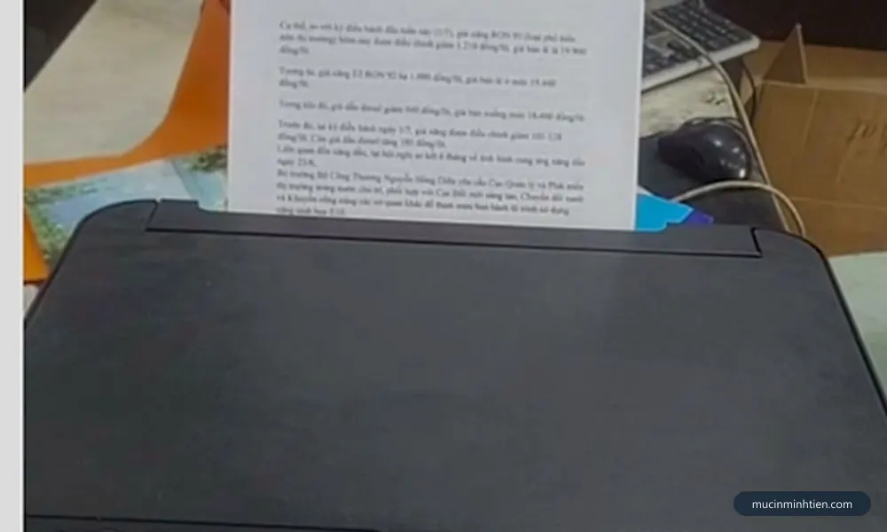
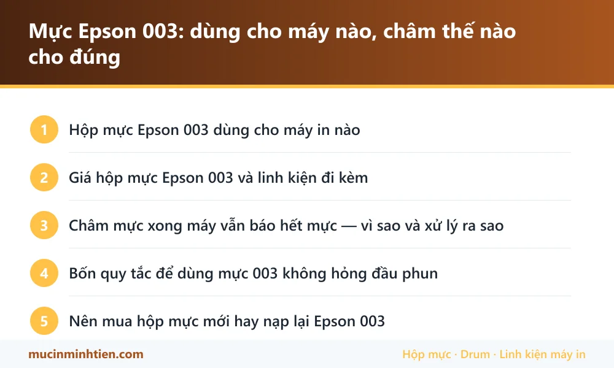

Mực Epson 003: dùng cho máy nào, châm thế nào cho đúng

Mực Epson 003 là mực chai dùng cho dòng EcoTank bình mực ngoài: L1110, L1210, L3110, L3150, L3210, L3250 và các máy cùng hệ. Theo công bố của hãng, một chai đen cho khoảng 4.500 trang và chai màu khoảng 7.500 trang. Điều quan trọng nhất khi dùng mã này: châm đầy bình xong <strong>vẫn phải báo cho máy biết</strong>, vì máy đếm mực bằng phần mềm chứ không đo thật trong bình.
Hộp mực Epson 003 dùng cho máy in nào
| Dòng máy | Model cụ thể | Ghi chú |
|---|---|---|
| Epson EcoTank đơn năng | L1110, L1210 | Chỉ in, không scan không copy — ít bộ phận nhất nên dễ chẩn đoán |
| Epson EcoTank đa năng | L3110, L3150, L3116 | In, scan, copy. Bản L3150 có thêm Wi-Fi |
| Epson EcoTank đời kế tiếp | L3210, L3250, L3251, L3256 | Đời thay thế cho L3110 và L3150, vẫn dùng mực 003 |
| Epson EcoTank dòng L5 | L5190 và các máy cùng hệ mực | Có thêm fax và khay nạp tự động |

Giá hộp mực Epson 003 và linh kiện đi kèm
Bảng dưới là hàng đang có tại kho 77 Bắc Hải, Phường Diên Hồng, TP.HCM, giá tham khảo cho khách lẻ. Đây là giá thật trong bảng giá công khai, không phải giá quảng cáo.
| Sản phẩm | Nhóm | Giá tham khảo |
|---|---|---|
| Mực nước dùng cho máy in phun Epson (1 lít) giá tính trên 1 chai - Ep1lít | Hộp mực & mực in máy in | 115.000 đ |
| Bộ Mực in Epson EcoTank L3110/L3150 (003BK/C/Y/M) (70ml/chai) giá tính trên 1 bộ - 2937_116590913 | Hộp mực & mực in máy in | 119.000 đ |
| Mực nước Epson Inktec Hàn Quốc 1 lít sử dụng cho máy in phun Epson giá tính trên 1 chai - mực nước 1000ml | Hộp mực & mực in máy in | 169.000 đ |
| Mực in Epson 003 chính hãng — 4 màu CMYK — Minh Tiến | Hộp mực & mực in máy in | 490.000 đ |
| Bộ Mực nước Epson Inktec Hàn Quốc 1 lít sử dụng cho máy in phun Epson (6 màu / 1 bộ) - Mực nước EP ink 1lit | Hộp mực & mực in máy in | 990.000 đ |
Không thấy mã cần tìm? Dùng công cụ tra cứu theo model máy hoặc xem bảng giá đầy đủ 773 mã.

Châm mực xong máy vẫn báo hết mực — vì sao và xử lý ra sao
Đây là tình huống gây bối rối nhất với người mới dùng dòng EcoTank, và nó không phải lỗi máy.
Máy dòng L không có cảm biến đo mực thật trong bình. Nó đếm số giọt mực đã phun ra bằng phần mềm rồi suy ra lượng mực còn lại. Bạn châm đầy bình mà không báo cho máy biết thì bộ đếm vẫn ở mức cạn, và máy tiếp tục cảnh báo hoặc khóa không cho in.
Cách xử lý đúng:
- Châm đầy bình tới vạch trên, không châm tràn.
- Nối máy với máy tính bằng cáp USB.
- Mở Epson Printer Utility hoặc phần mềm Epson đi kèm driver.
- Tìm mục đặt lại hoặc xác nhận mức mực sau khi châm, xác nhận từng màu đã châm đầy.
- Một số dòng còn cho giữ nút giọt mực trên thân máy vài giây để xác nhận nhanh.
Dùng phần mềm trên máy tính là cách chắc chắn nhất vì giao diện giống nhau ở mọi đời máy, không sợ bấm nhầm nút khi làm theo video của model khác.
Bốn quy tắc để dùng mực 003 không hỏng đầu phun
Đầu phun là bộ phận đắt nhất và cũng nhạy cảm nhất trên dòng máy này. Bốn quy tắc dưới đây quyết định máy dùng được vài năm hay vài tháng.
- Không để bình cạn kiệt rồi mới châm. Mực xuống dưới vạch dưới thì không khí lọt vào ống dẫn, gây bọt khí và mất màu từng đoạn. Châm khi còn khoảng một phần tư bình.
- Không trộn nhiều loại mực khác nhau. Mỗi loại mực có công thức riêng; trộn lẫn dễ kết tủa và bịt vòi phun.
- In vài trang có đủ bốn màu mỗi tuần. Máy phun để nằm không là nguyên nhân số một gây khô mực trong vòi.
- Không chạy Head Cleaning liên tục. Mỗi lần chạy là một lần xả mực xuống tấm thấm mực thải, đẩy bộ đếm đầy nhanh hơn. Tối đa ba lần rồi để máy nghỉ.
Quy trình xử lý khi bản in đã bị sọc hoặc mất màu có ở bài vệ sinh đầu phun máy in Epson. Nếu máy đang nháy đèn kèm theo, đọc máy in Epson nháy 2 đèn đỏ trước khi thao tác.
Nên mua hộp mực mới hay nạp lại Epson 003
Dòng EcoTank vốn đã được thiết kế để người dùng tự châm mực, nên câu hỏi ở đây không phải nạp hay không nạp mà là châm bằng mực nào.
Mực chính hãng cho màu sắc ổn định và ít rủi ro tắc vòi nhất, hợp với máy in ảnh hoặc in tài liệu cần màu chuẩn. Mực thay thế loại tốt rẻ hơn đáng kể và dùng ổn với văn phòng in văn bản là chính. Điều tuyệt đối nên tránh là mực trôi nổi không rõ nguồn: chi phí thay đầu phun luôn cao hơn nhiều so với khoản tiết kiệm được trên vài chai mực.
Một lưu ý về lượng dùng: mực dòng L có thể mua theo chai lẻ từng màu hoặc theo bộ bốn màu. Văn phòng in đen là chính thường hết màu đen trước, nên mua lẻ chai đen sẽ hợp lý hơn mua trọn bộ.

Câu hỏi thường gặp về hộp mực Epson 003
Mực Epson 003 dùng cho máy nào?
Một chai mực 003 in được bao nhiêu trang?
Châm mực xong máy vẫn báo hết mực thì làm sao?
Có được trộn mực 003 với mực loại khác không?
Máy dùng mực 003 bị mất màu đen thì xử lý thế nào?
Bao lâu nên châm mực một lần?
Bài viết liên quan
- Cách vệ sinh đầu phun máy in Epson hết sọc, hết mất màu
- Tràn bộ đếm mực thải Epson: dấu hiệu và cách xử lý
- Epson L3210 nháy 2 đèn đỏ: nguyên nhân và cách xử lý
- Máy in bị sọc trắng ngang: xử lý theo từng loại máy
- Hộp mực TN-2380: dùng cho máy nào, giá bao nhiêu
- Hộp mực 12A: dùng cho máy nào, giá bao nhiêu
- Tra hộp mực và linh kiện theo model máy in
- Nạp mực máy in tận nơi TP.HCM từ 80.000đ